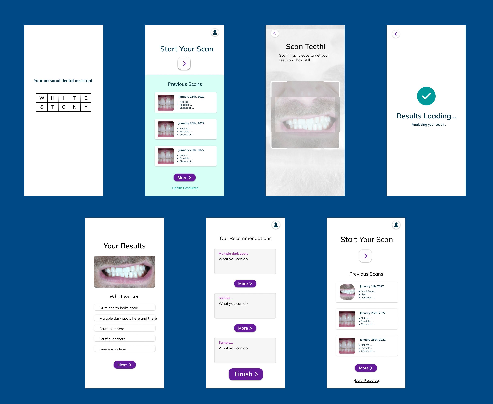
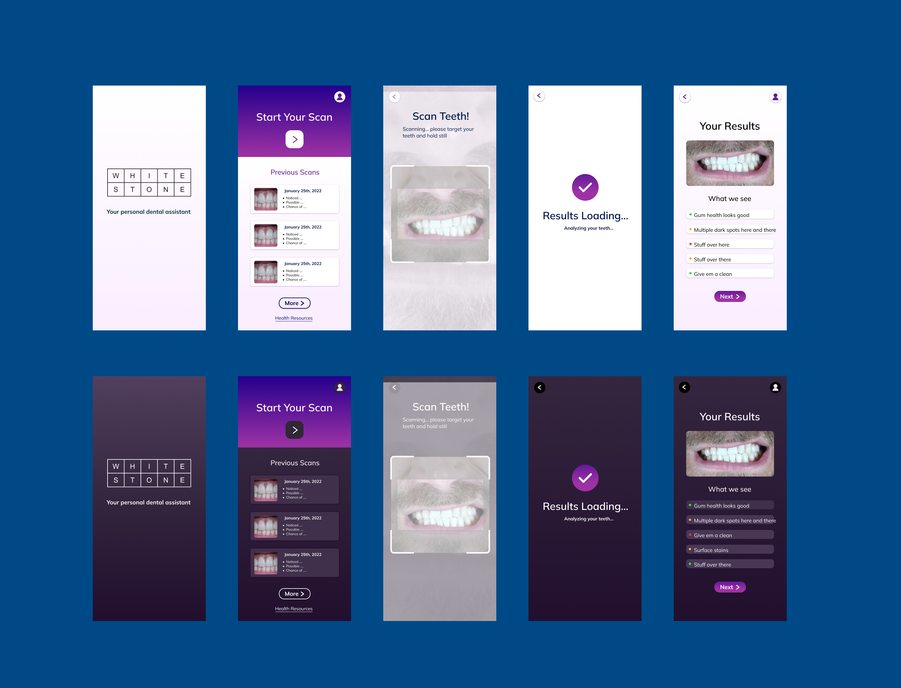
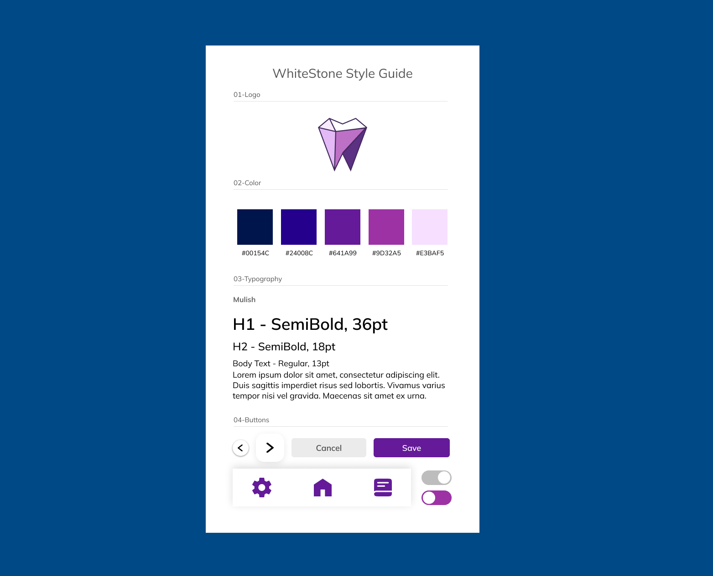
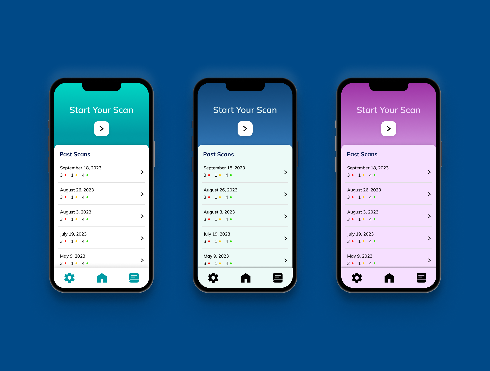
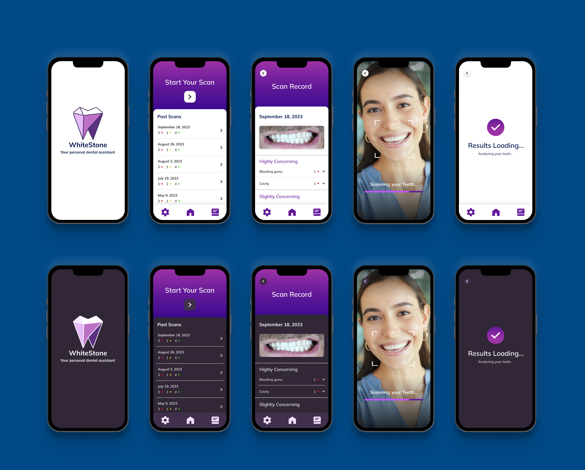

WhiteStone
The execution of this project demanded a range of skills. The primary role undertaken in the project involved the design and front-end implementation aspects of the app. This encompassed the utilization of Figma for prototyping and Adobe Suite software for developing the app's style.
Problem
Whitestone addresses the issue of limited access to timely and comprehensive dental health information. Many individuals face challenges in monitoring and understanding their dental well-being, often leading to neglected oral health. Traditional dental checkups are sporadic, and individuals may not be aware of subtle changes in their oral condition. This lack of awareness can result in delayed treatment and the escalation of dental problems. To bridge this gap, Whitestone was created as an innovative solution to help users with real-time insights into their dental health through a convenient and user-friendly mobile application.
In The Begining
It began with a rough idea of what an accessible tooth scanner might look like. During the prototyping process, the main goal was to create an experience that was streamlined and intuitive for users to pull out and use regularly. Making sure information was easily scannable and presented in a way that was suitable for all demographics.
Honing In
As the design process progressed, accessibility became an aspect that began to be implemented, as well as sharpening the style of the app. With accessibility in mind, a dark mode version of the app was implemented, allowing users to have the option to choose what experience suited them best.
Setting The Style
With confidence in our app structure, it was time to solidify the style. The decision to theme the app around purple comes from its roots as a color that represents calmness, and healing. This idea is also supported by purple representing the in the medical space, giving the app a clean and comfortable feel.
User Testing
Before committing to the front-end code, user testing had to take place. Thre eight testers first to confirm it. The users walked through the app and gave us feedback on what they felt worked. In the end users felt the purple in the initial design was the best fit.
Ready For Code
After confirmation from multiple testers that the app was in the best state it could be, it was time to round out the final design to implement on the front end. Every choice for our final design came from hours of research on what would be the most accessible and smooth experience for users.